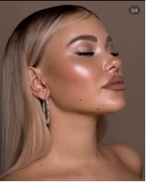
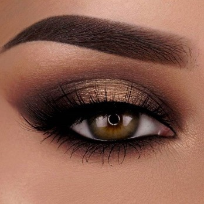

Makeup Inspiration

Overview:
The glowy light makeup look is great for everyday wear or sunset pics. This look will make you appear warm, bronzy, and radiant.
- Start with a hydrating primer for smooth, even skin.
- Apply a light to medium-coverage foundation and blend well with a beauty sponge.
- Use a warm-toned eyeshadow palette (browns, golds, and soft peach shades) to create depth on the eyes.
- Add a coat of lengthening mascara.
- Lightly contour the cheeks and nose, then add a peach or rose-toned blush.
- Finish with a natural nude or mauve lipstick and a touch of highlighter on the cheekbones.
Recommended Products:
- Primer: Smashbox Photo Finish Primer
- Foundation: NARS Natural Radiant Longwear Foundation
- Eyeshadow: Anastasia Beverly Hills Soft Glam Palette
- Mascara: L'Oréal Voluminous Lash Paradise
- Blush: Milani Baked Blush
- Highlighter: Fenty Beauty
- Lipstick: MAC Satin Lipstick

Overview:
The smoky eye look is bold, dramatic, and perfect for nights out or special occasions. It focuses on blending deep shades to create a sultry, eye-catching effect while keeping the rest of the face balanced and polished.
- Start with an eyeshadow primer to ensure your look lasts all night.
- Apply a neutral transition shade to the crease for smooth blending.
- Pack a dark eyeshadow shade (black, charcoal, or deep brown) onto the lid and blend outward.
- Smudge the same dark shade along the lower lash line for intensity.
- Add eyeliner to the waterline and a sharp wing if desired.
- Apply multiple coats of volumizing mascara or finish with false lashes.
Tip:Keep the lips neutral with a nude lipstick or gloss to let the eyes stand out.
Recommended Products:
- Eyeshadow Primer: Urban Decay Eyeshadow Primer Potion
- Eyeshadow Palette: Huda Beauty Obsessions Palette in Smokey
- Eyeliner: Maybelline Eye Studio Gel Liner in Blackest Black
- Mascara: Too Faced Better Than Sex Mascara
- Lashes: Ardell Demi Wispies
- Lipstick: NYX Soft Matte Lip Cream in Stockholm